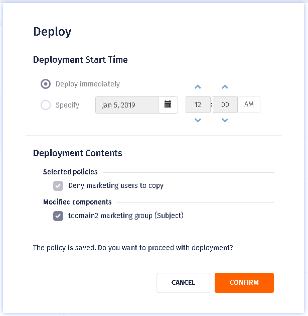

Adding policies
- Log in to the console with an account that has permission to add policies.
- On the left navigation bar, click Policies.
- Click ADD POLICY.
-
Provide the policy information. This is used to identify the policy on the
Policies list and in the system:
Table 1. Policy information Option Description Name The display name of the item. Names cannot be longer than 255 characters, and cannot include the reserved characters $, /, ?, \, &, or *. Names can include multibyte characters, such as those used by Asian languages. Description A description of the item. This field is useful for explaining how the item is used and for documenting changes to the item. Descriptions can include multibyte characters, such as those used by Asian languages. Tags Tags are labels that identify or classify objects. For example, you could apply a tag named Team1 to all documents related to the Team1 project. You could then search for documents with the Team1tag, or set access requirements for documents with the Team1 tag. Note: Tags used in policies are available only to policies; policy tags are not available to components, and component tags are not available to policies. -
Select the policy effect and subject components:
Note: If you do not specify a subject component, the policy applies to all subject components.
Table 2. Policy effect and subject components Option Description Policy Effect The action taken when conditions in the policy are met. - Allow: Permit the listed Subjects to perform the task specified in the policy. Allowing a set of Subjects to perform a task does not mean that others are blocked from performing that action. Allow policies can never result in Deny responses. Allow policies can only result in Allow or Not Applicable responses.
- Deny: Do not permit the listed Subjects to perform the task specified in the policy, but allow all others to do so. Deny policies can result in Deny, Allow, or Not Applicable responses.
Subject Components (Add Condition) The subjects (users) to be governed by the policy. Conditions are expressions of predicates that refine the context in which policy actions are performed. Conditions can be selected only if attributes have been added for the subject type policy component.
Using conditions, you can create policies that change their effect based on dynamic comparisons, evaluations, or contextual factors. For complex contextual factors, use Condition Expressions, which are written directly in ACPL. Click the plus icon next to the condition that you want to set.Important: If no subject components are specified, the policy applies to all subject components.And Recipient The recipients of communications to which this policy will apply. You can specify one or more recipients of communications. Recipients are represented as User components. If you leave this field blank, the policy will apply to all recipients, so if it is a Deny policy it will block users from sending the specified communications to any user.
In order to support this feature, User components have two special properties, E-mail Address and Domain. You can use them to define a user component based individual email address or domain, just as you might use other properties like Location or Job Title. This is useful for creating user components representing, for example, an email blacklist (or whitelist), which you then use as the And Recipient field of your communication policy.Note: You can use wildcards in defining email addresses as user properties, but not with domains. When defining users based on domains, you must supply one or more whole domain strings. -
Select resource components. These are the information resources, such as
documents, spreadsheets, to be governed by this policy. Do any of the
following:
- To select from all existing resource components, click in the field, then select a resource component.
- To search for resource component, begin typing in the field, then select a resource component.
-
To add a resource component, type a name, select the check box next to the name, which is identified as (NEW), then click APPLY. An empty resource component is added to the policy. The new resource component also appears on the Resource Components list. Edit the resource component to define its properties.
- To add multiple resource components, click ADD CONDITION, then select or add a resource component.
-
To remove a resource component, click the X next to the resource component name.
- For
an action that logically involves a From location and
a To location—Moved, Renamed, or Copied—you can specify a target
location for the action of each policy. This control is used to specify
a distinct location where you want to either permit or prohibit copying
or moving all resources covered by the policy. If you do not specify a
target, the policy will apply whenever the specified From action occurs,
without regard to a target location.To specify a target location:
- Click Target Location (Moved, Renamed, or Copied).
- From the drop-down list, select an operator:
- Into: Use Into to specify a particular destination; for example, when the specified users attempt to copy a file into a particular directory.
- Outside: Use Outside to specify anywhere but a particular destination.
- Specify the target location:
- To search for file names, directories, storage locations (file servers and folders), or document or portal content components, begin typing in the field, then select the target location.
- To add a target location, type a name, select the check box next to the name, which is identified as (NEW), then click APPLY.
- Select action components. These are the actions to be governed by the policy. If you include more than one action, an OR operator is assumed. If you do not specify any action component, the policy is in effect for all actions.
-
Optional: In the Advanced Conditions section, add any PQL expressions you want
to use in policy evaluation. Advanced conditions extend policy evaluation by
defining expressions that cannot be defined using components. For example, if a
third-party system needs to provide input into policy evaluation, you could
construct an expression that invokes the external system using the following
syntax:
call_function("Service_Name", "Function_Name", <arguments>)For example:
call_function("SECURITY", "Check classification", user.classification, "TOP SECRET")= "yes"In addition, you can use variables in expressions. For more information about conditional expressions.- Connection type: This is the type of connection between the policy
server and the enforcement point. If you set this to Remote, the
policy is enforced only if users are connected to the computer
remotely, via Remote Desktop Protocol (RDP). This is useful for
restricting the actions remote users can take—use only certain
applications, or access resources only on certain network
servers.Note: This condition can only be used in policies that are enforced by desktop-level enforcers. If you include it in a policy that is enforced on the server side—for example, by the Windows File Server or SharePoint Server enforcer—it does not work properly, since server-side enforcers cannot detect the end user’s connection type.
- Heartbeat: This enables you to define policies that are triggered on the basis of how many minutes have passed since the Control Center Server has received a heartbeat message from some enforcer. When the value specified here is exceeded, the policy is enforced. The most obvious use of this feature is to protect the data on lost or stolen notebook PCs: once they have been disconnected from the network for a suspiciously long time, a policy might be enforced that, for example, encrypts or deletes all sensitive files on the local drive.
- Connection type: This is the type of connection between the policy
server and the enforcement point. If you set this to Remote, the
policy is enforced only if users are connected to the computer
remotely, via Remote Desktop Protocol (RDP). This is useful for
restricting the actions remote users can take—use only certain
applications, or access resources only on certain network
servers.
-
Choose the policy effective duration. This is the period of time when the
policy is to be enforced. Setting a duration is useful if you have a policy that
you only want to enforce during a particular time period. For example, allowing
users to access resources during working hours only, or for the duration of a
specific project:
Table 3. Policy effect duration Option Description Always Enforce the policy continuously. Specific Days Enforce the policy according to the specified schedule: - Specify a date range to enforce the policy during a specified period.
- Specify a Start date to begin enforcing the policy on a specified date.
- Specify the days of the week on which the policy is to be enforced. For example, select SUN and SAT to enforce the policy on weekends only (Sunday and Saturday).
Note: It is important to understand the difference between these time condition settings. If a user does something to a resource and it is within this specified time period, the policy is enforced; if it is outside that period, the policy is not enforced. However, the policy is evaluated in either case. Time is evaluated based on the clock running on the Policy Management Server, a Control Center component, which is determined by the time zone where the Policy Management Server host is located. For example, if you are using the web console in a branch office in Buffalo, and the Control Center is installed on a server at company headquarters in Tulsa, the time you specify is interpreted as Tulsa time. -
Select the obligations you want the system to perform when the situation
described in the policy occurs. Choose
Audit
activity to log the event in the Activity
Journal. Choose Notify to send an email alert to an
administrator.
- The To: field, where you supply the email address or addresses to which notification messages are to be sent. Separate multiple addresses using a comma.
- The Message: field, where you supply the message that goes into the body text of the notification email. In addition to whatever you specify here, the body of each email also includes details about that instance of enforcement: the user, the location, the document name, and so on.
- All notification email messages automatically include the following
information:
- User who triggered the policy enforcement
- Host where user was working
- Application involved
- Source file being used or accessed
- Action attempted
- Effect (allow/deny/when)
- Policy name
- Policy description
- Date and time of enforcement
- The from address: By default, the From address field in all email notifications contains a placeholder value. The Control Center administrator can replace this with a real address by manually editing the configuration file. You can define only one From address, which is included in all email notifications for all policies.
-
In the DEPOLYMENT TARGET section, select one of the following:
- Auto Deployment: The policy is distributed to all relevant enforcers in the system.
- Manual Deployment: The policy is distributed to only the enforcers that you specify.
-
Do
one of the following:
- Click SAVE.
If you chose SAVE, you must deploy the policy to distribute it to enforcers. Policies are enforced only after they are deployed and the appropriate enforcers are configured.
- Click SAVE & DEPLOY. The Deploy dialog appears.
Figure: Deployment start time 
- Click SAVE.
-
If you clicked SAVE & DEPLOY, select one of the
following options:
- Deploy immediately: (Default). Deploys the policy right away, without waiting for heartbeat messages from the enforcers. This is called push deployment.
- Specify: Displays the current time by default, but you can use the calendar and time widgets to set any specific minute you want deployment to begin. The policy state is Deployment Pending.
-
In Deployment Contents, look for the Modified components category. If present,
it shows policy components that are needed by the object you are trying to
deploy and that have been modified and resubmitted for deployment. Check the box
next to any of these components that you want to schedule for deployment at the
same time.
Note: In the Deployment Contents section, if you choose to clear any check box under Modified components, the system ignores the changes done to that component and uses the previously deployed component.
- Click CONFIRM.